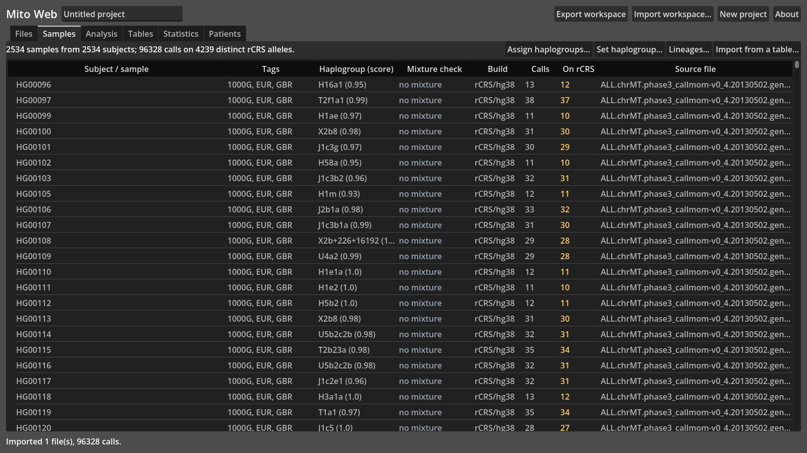
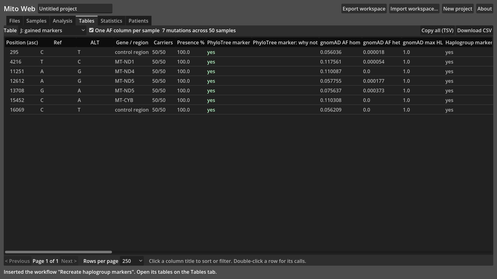
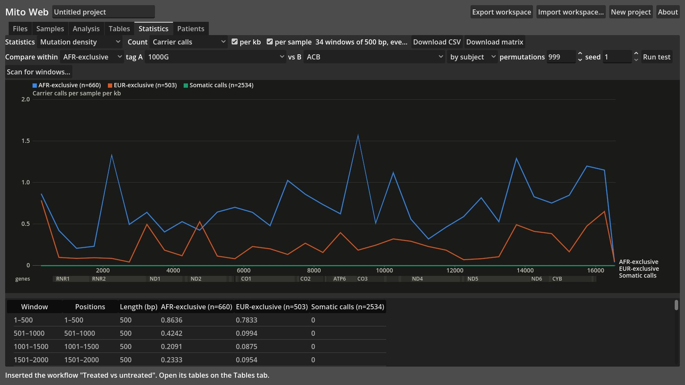

Mito Web
Mitochondrial DNA analysis that never leaves your browser.
Upload VCF files and Mito Web places every call on the mitochondrial reference, assigns each sample a haplogroup, and lets you build an analysis as a graph of filters, comparisons, annotations and statistics. There is no server: your data stays on your computer.

The problem
Studying mitochondrial variants usually means a chain of separate tools: a variant caller's output in several reference builds, a haplogroup classifier, an annotation service, and statistics in R or Stata. Most of them run on a server or the command line.
Research data often can't be uploaded anywhere. Mito Web began as a server-based tool for a research collaboration and was rebuilt to run entirely in the browser, so anyone can use it on their own data without it being hosted or shared.
How it works
A Godot application compiled to WebAssembly. Files are read in the browser and kept in its storage; a workspace file saves a project.
Calls on one reference
VCFs (or a zip of them) from rCRS, hg19 or hg19+58 are projected onto the rCRS reference with a conservative mapper, trimmed and left-normalized, so identities agree across builds. A manifest can set each file's sample, build and tags.
A graph of steps
Nodes for sample groups, filters, comparisons, germline/somatic classes by allele fraction, gnomAD and ClinVar annotation, density statistics and patient comparisons. Results are cached per node; preset workflows build whole analyses.
Haplogroups and statistics
PhyloTree 17 haplogroups scored the HaploGrep 3 way, with a mixture check for contamination or swapped files. Permutation tests along the genome, and Kruskal-Wallis, Wilcoxon, Fisher's exact, ANOVA and Spearman between patient groups.
Results
Checked against the established tools on public data.
Haplogroups
Agreement with HaploGrep 3.3.2 on all 2,534 people in the 1000 Genomes Project's mitochondrial data.
Markers recreated
Haplogroup-defining variants found from the data alone across all 27 clades present, every one a known PhyloTree marker.
Statistics
Patient-group tests follow Stata 18's defaults and are tested against published Stata results and scipy.
Screenshots


